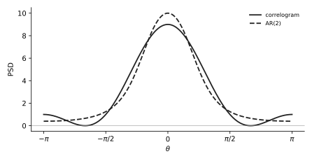

U12 · AR model by Yule–Walker: coefficients, noise variance, PSD#
Before this page
M3 rules 2 and 3 (expanding \(|1 + a_1e^{-j\theta} + a_2e^{-j2\theta}|^2\)), M7 z-domain facts, M10 solving two equations. U11 for comparison.
The idea in plain words#
An autoregressive (AR) model says: the signal today is a weighted sum of its own past values plus a fresh random kick (white noise). If you know the autocorrelation lags, the weights follow from a small linear system called the Yule–Walker equations, and the size of the kick follows from one more line. Once you have the weights, the PSD is "kick power divided by the squared magnitude of a polynomial", which you expand into cosines.
The thing that confused me
The sign of \(a_1\). The course writes the model as \(x[n] = i[n] - a_1x[n-1] - a_2x[n-2]\) (minus signs), so that \(H(z) = 1/(1 + a_1z^{-1} + a_2z^{-2})\) with plus signs. With that convention \(a_1 = -r[1]/r[0]\) for AR(1). If a textbook writes \(x[n] = \phi x[n-1] + i[n]\) then \(\phi = +r[1]/r[0] = -a_1\). Same model, flipped label. Write the model equation first, then derive; never quote a sign from memory.
A tiny example with numbers#
\(r[0] = 2\), \(r[1] = 1\), AR(1). Model: \(x[n] = i[n] - a_1x[n-1]\). Multiply by \(x[n-1]\) and take expectations: \(E[x[n]x[n-1]] = E[i[n]x[n-1]] - a_1E[x[n-1]^2]\), i.e. \(r[1] = 0 - a_1r[0]\) (the fresh kick \(i[n]\) is uncorrelated with the past). So \(a_1 = -r[1]/r[0] = -\frac12\). Kick power: multiply the model by \(x[n]\): \(r[0] = E[i[n]x[n]] - a_1r[1] = \sigma_i^2 - a_1r[1]\) (since \(E[i[n]x[n]] = \sigma_i^2\)). So \(\sigma_i^2 = r[0] + a_1r[1] = 2 - \frac12 = 1.5\). PSD: \(\dfrac{\sigma_i^2}{|1 + a_1e^{-j\theta}|^2} = \dfrac{1.5}{1 + \frac14 - \cos\theta} = \dfrac{1.5}{1.25 - \cos\theta}\). At \(0\): \(6\). At \(\pi\): \(0.667\).
Your turn
\(r[0] = 4\), \(r[1] = -2\). Find \(a_1\), \(\sigma_i^2\) and the PSD as a function of \(\cos\theta\). Is it low-pass or high-pass?
Answer
\(a_1 = -(-2)/4 = \frac12\); \(\sigma_i^2 = 4 + \frac12(-2) = 3\); \(P = \dfrac{3}{1 + \frac14 + \cos\theta} = \dfrac{3}{1.25 + \cos\theta}\): \(1.33\) at \(0\), \(12\) at \(\pi\): high-pass (negative lag-1 correlation).
The formulas, every symbol named#
Model: \(x[n] = i[n] - \sum_{k=1}^{p}a_kx[n-k]\), \(\quad H(z) = \dfrac{1}{1 + \sum_k a_kz^{-k}}\)
Yule–Walker (one equation per lag \(m = 1..p\)): \(r[m] + \sum_{k=1}^{p}a_k\,r[m-k] = 0\)
Noise variance: \(\sigma_i^2 = r[0] + \sum_{k=1}^{p}a_k\,r[k]\)
PSD: \(P_{AR}(e^{j\theta}) = \dfrac{\sigma_i^2}{\left|1 + \sum_k a_ke^{-jk\theta}\right|^2}\)
| Symbol | Meaning |
|---|---|
| \(p\) | model order: how many past samples enter |
| \(a_k\) | AR coefficients (the unknowns) |
| \(i[n]\), \(\sigma_i^2\) | the innovation: white noise driving the model, and its variance |
| \(r[m]\) | autocorrelation lags, given or computed (U14); \(r[-m] = r[m]\) |
| matrix form, AR(2) | \(\begin{bmatrix}r[0]&r[1]\\r[1]&r[0]\end{bmatrix}\begin{bmatrix}a_1\\a_2\end{bmatrix} = -\begin{bmatrix}r[1]\\r[2]\end{bmatrix}\), or the "augmented" form the official keys use: \(\begin{bmatrix}r[0]&r[1]&r[2]\\r[1]&r[0]&r[1]\\r[2]&r[1]&r[0]\end{bmatrix}\begin{bmatrix}1\\a_1\\a_2\end{bmatrix} = \begin{bmatrix}\sigma_i^2\\0\\0\end{bmatrix}\) |
Where Yule–Walker comes from. Multiply the model by \(x[n-m]\) and take \(E[\cdot]\). For \(m\ge1\) the kick term vanishes (\(i[n]\) is independent of older \(x\)) and every \(E[x[n-k]x[n-m]]\) is \(r[m-k]\). For \(m = 0\) the kick term is \(E[i[n]x[n]] = \sigma_i^2\), giving the variance line.
Expanding the denominator (M3): AR(1): \(1 + a_1^2 + 2a_1\cos\theta\). AR(2): \((1 + a_1^2 + a_2^2) + 2(a_1 + a_1a_2)\cos\theta + 2a_2\cos2\theta\).
What the exam asks, in its own words#
| IF YOU SEE | It means |
|---|---|
| "model the signal as an AR(1) process, find the parameters" | \(a_1 = -r[1]/r[0]\) and \(\sigma_i^2 = r[0] + a_1r[1]\); show the two YW lines, not just the result |
| "state the Yule–Walker equations for this AR(2) process in matrix form" | write the \(2\times2\) (or augmented \(3\times3\)) system with the numbers in |
| "calculate the AR coefficients \(a_1\) and \(a_2\)" | solve that system by substitution, fractions kept |
| "calculate the variance of the driving white noise" | \(\sigma_i^2 = r[0] + a_1r[1] + a_2r[2]\) |
| "write the expression for the parametric PSD … as a function of \(\cos\theta\)" | \(\sigma_i^2\) over the expanded denominator |
| "\(x[n] = i[n] - a_1x[n-1] - a_2x[n-2]\)" written in the question | the course convention above; YW has plus signs on the \(a_k\) |
| "some parameters may result in fractions with large numbers" | expected; keep them exact (Jan 2022: \(\frac{451}{416}\)) |
| "provide a sketch" | evaluate the PSD at \(0\), \(\pm\pi/2\), \(\pm\pi\) and draw |
Recipe#
U12 · Yule–Walker in five moves
- Write the model with the course signs: \(x[n] = i[n] - a_1x[n-1] - \ldots\). Note \(r[-m] = r[m]\).
- Yule–Walker: for \(m = 1..p\) write \(r[m] + a_1r[m-1] + \cdots + a_pr[m-p] = 0\) with numbers. AR(1): one line. AR(2): two lines (in the \(m=2\) line \(r[2-1] = r[1]\), \(r[2-2] = r[0]\)).
- Solve for the \(a_k\) (M10). AR(1): \(a_1 = -r[1]/r[0]\).
- Variance: \(\sigma_i^2 = r[0] + a_1r[1] + \cdots + a_pr[p]\). It must be positive and \(\le r[0]\); if not, a sign went wrong.
- PSD: \(\sigma_i^2/|1 + a_1e^{-j\theta} + \ldots|^2\); expand the denominator with M3; optionally clear fractions by multiplying top and bottom. Evaluate at \(0\) and \(\pi\) for the sketch or the plot-matching MC.
Worked exam question, one step at a time#
June 2026 resit · 3d · 1 p
(\(r_x[0] = 3\), \(r_x[1] = 2\), \(r_x[2] = 1\).) You now wish to model this process parametrically using an Autoregressive (AR) model of order \(p = 2\): \(x[n] = i[n] - a_1 x[n-1] - a_2 x[n-2]\) where \(i[n]\) is zero-mean white noise with variance \(\sigma_i^2\).
- State the Yule-Walker equations for this AR(2) process in matrix form. [0.1]
- Calculate the AR coefficients \(a_1\) and \(a_2\). [0.4]
- Calculate the variance of the driving white noise \(\sigma_i^2\). [0.2]
- Based on your estimated parameters, write the expression for the parametric power spectral density estimate \(\hat{P}_{AR}(e^{j\theta})\). Express it as a function of \(\cos(\theta)\). [0.3]
Step 1 · Model and matrix form. \(x[n] + a_1x[n-1] + a_2x[n-2] = i[n]\). Multiply by \(x[n-1]\) and by \(x[n-2]\), take expectations:
(Augmented form, equally accepted: \(\begin{bmatrix}3&2&1\\2&3&2\\1&2&3\end{bmatrix}\begin{bmatrix}1\\a_1\\a_2\end{bmatrix} = \begin{bmatrix}\sigma_i^2\\0\\0\end{bmatrix}\).)
Now do step 2 yourself: write the two equations as lines and solve them.
Step 2 · Solve. \(3a_1 + 2a_2 = -2\) and \(2a_1 + 3a_2 = -1\). Multiply the first by 3, the second by 2: \(9a_1 + 6a_2 = -6\), \(4a_1 + 6a_2 = -2\). Subtract: \(5a_1 = -4 \Rightarrow a_1 = -0.8\). Back into the second: \(2(-0.8) + 3a_2 = -1 \Rightarrow 3a_2 = 0.6 \Rightarrow a_2 = 0.2\).
Now do step 3 yourself: the variance line.
Step 3 · Variance. \(\sigma_i^2 = r[0] + a_1r[1] + a_2r[2] = 3 + (-0.8)(2) + (0.2)(1) = 3 - 1.6 + 0.2 = 1.6\). Positive and below \(r[0] = 3\): plausible.
Now do step 4 yourself: expand \(|1 - 0.8e^{-j\theta} + 0.2e^{-j2\theta}|^2\) with M3 rule 3.
Step 4 · PSD. Denominator: \((1 + a_1^2 + a_2^2) + 2(a_1 + a_1a_2)\cos\theta + 2a_2\cos2\theta = (1 + 0.64 + 0.04) + 2(-0.8 - 0.16)\cos\theta + 0.4\cos2\theta = 1.68 - 1.92\cos\theta + 0.4\cos2\theta\).
Check at \(\theta = 0\): \(\frac{1.6}{1.68 - 1.92 + 0.4} = \frac{1.6}{0.16} = 10\). At \(\pi\): \(\frac{1.6}{1.68 + 1.92 + 0.4} = \frac{1.6}{4} = 0.4\). Compare the correlogram of U11: 9 at 0, 1 at \(\pi\). Same low-pass shape, the AR model is sharper.

Answer
YW: \(\begin{bmatrix}3&2\\2&3\end{bmatrix}\begin{bmatrix}a_1\\a_2\end{bmatrix} = -\begin{bmatrix}2\\1\end{bmatrix}\); \(a_1 = -0.8\), \(a_2 = 0.2\); \(\sigma_i^2 = 1.6\); \(\hat P_{AR} = \dfrac{1.6}{1.68 - 1.92\cos\theta + 0.4\cos2\theta}\).
Do it cold · 1#
April 2025 · 3e · 0.5 p
\(r[0] = 2\), \(r[\pm1] = -\frac14\), \(r[\pm2] = -\frac{3}{16}\). Model the signal as an AR(1) process, find the parameters of the model, and calculate the corresponding PSD in a parametric fashion. Express \(P_{AR}(e^{j\theta})\) as a function of cosines.
Solution
YW, \(m=1\). \(r[1] + a_1r[0] = 0 \Rightarrow -\frac14 + 2a_1 = 0 \Rightarrow a_1 = \frac18\). (Official matrix: \(\begin{bmatrix}2&-1/4\\-1/4&2\end{bmatrix}\begin{bmatrix}1\\a_1\end{bmatrix} = \begin{bmatrix}\sigma_i^2\\0\end{bmatrix}\).)
Variance. \(\sigma_i^2 = r[0] + a_1r[1] = 2 + \frac18\left(-\frac14\right) = 2 - \frac1{32} = \frac{63}{32}\).
PSD. \(|1 + \frac18e^{-j\theta}|^2 = 1 + \frac1{64} + \frac14\cos\theta = \frac{65}{64} + \frac14\cos\theta\). \(P = \dfrac{63/32}{65/64 + \frac14\cos\theta}\). Multiply top and bottom by 64: \(\dfrac{126}{65 + 16\cos\theta}\). At \(0\): \(126/81 = 1.556\). At \(\pi\): \(126/49 = 2.571\).
Answer
\(a_1 = \frac18\), \(\sigma_i^2 = \frac{63}{32}\), \(P_{AR1}(e^{j\theta}) = \dfrac{126}{65 + 16\cos\theta}\).
Do it cold · 2#
November 2022 · 3f · 0.75 p
(The ARMA(1,1) signal of 3c–3e has \(r[0] = 1\), \(r[1] = -\frac18\), \(r[\tau] = -\frac18(\frac34)^{|\tau|-1}\).) Try to model \(x[k]\) as an AR(1) signal and calculate the corresponding PSD \(P_{AR1}(e^{j\theta})\).
Solution
\(a_1 = -r[1]/r[0] = \frac18\). \(\sigma_i^2 = 1 + \frac18\left(-\frac18\right) = 1 - \frac1{64} = \frac{63}{64}\). \(P = \dfrac{63/64}{65/64 + \frac14\cos\theta} = \dfrac{63}{65 + 16\cos\theta}\).
Answer
\(a_1 = \frac18\), \(\sigma_i^2 = \frac{63}{64}\), \(P_{AR1} = \dfrac{63}{65 + 16\cos\theta}\). (Compare the true ARMA PSD \(28\frac{1-\cos\theta}{25-24\cos\theta}\), which is exactly 0 at \(\theta=0\): an AR(1) cannot make a zero, so it only approximates.)
Do it cold · 3 (large fractions)#
January 2022 resit · 3d · 1 p
(MA(2) with \(r[0] = \frac{13}{8}\), \(r[\pm1] = -\frac{15}{16}\), \(r[\pm2] = \frac14\).) Now assume \(x[n]\) can be modeled as an AR(1) process. Find the AR model parameters and the PSD (as a function of \(\cos\theta\)). Hint: some parameters may result in fractions with large numbers.
Solution
\(a_1 = -r[1]/r[0] = \frac{15/16}{13/8} = \frac{15}{16}\cdot\frac{8}{13} = \frac{15}{26}\). \(\sigma_i^2 = \frac{13}{8} + \frac{15}{26}\left(-\frac{15}{16}\right) = \frac{13}{8} - \frac{225}{416} = \frac{676}{416} - \frac{225}{416} = \frac{451}{416}\). Denominator: \(1 + \frac{225}{676} + \frac{15}{13}\cos\theta = \frac{901}{676} + \frac{15}{13}\cos\theta\). \(P = \dfrac{451/416}{901/676 + \frac{15}{13}\cos\theta}\). Multiply top and bottom by \(676\cdot\frac{416}{416}\): numerator \(\frac{451\cdot676}{416} = 451\cdot\frac{13}{8} = \frac{5863}{8}\), denominator \(901 + 780\cos\theta\); then by 8: \(\dfrac{5863}{7208 + 6240\cos\theta}\).
Answer
\(a_1 = \frac{15}{26}\), \(\sigma_i^2 = \frac{451}{416}\), \(P = \dfrac{5863}{7208 + 6240\cos\theta}\) (\(\approx 0.436\) at \(0\), \(6.06\) at \(\pi\)). Fallback values \(a=\frac14\), \(b=\frac54\): \(a_1 = -\frac{3}{14}\), \(\sigma_i^2 = \frac{561}{224}\), \(P = \frac{3927}{1640 - 672\cos\theta}\).
Do it cold · 4 (AR(2) with ugly numbers)#
April 2024 · 3e · 0.7 p
(\(r[0] = \frac{25}{16}\), \(r[\pm1] = -\frac34\), \(r[\pm2] = \frac12\) from the MA(3) of 3c.) Now model the signal as AR(2) process. Find the model parameters and the power spectral density.
Solution
YW. \(m=1\): \(r[1] + a_1r[0] + a_2r[1] = 0 \Rightarrow -\frac34 + \frac{25}{16}a_1 - \frac34a_2 = 0\). \(m = 2\): \(r[2] + a_1r[1] + a_2r[0] = 0 \Rightarrow \frac12 - \frac34a_1 + \frac{25}{16}a_2 = 0\). Multiply both by 16: \(25a_1 - 12a_2 = 12\) and \(-12a_1 + 25a_2 = -8\). From the first, \(a_1 = \frac{12 + 12a_2}{25}\). Into the second: \(-12\cdot\frac{12+12a_2}{25} + 25a_2 = -8 \Rightarrow -144 - 144a_2 + 625a_2 = -200 \Rightarrow 481a_2 = -56 \Rightarrow a_2 = -\frac{56}{481}\). Then \(a_1 = \frac{12 - 672/481}{25} = \frac{(5772 - 672)/481}{25} = \frac{5100}{481\cdot25} = \frac{204}{481}\).
Variance. \(\sigma_i^2 = \frac{25}{16} + \frac{204}{481}\left(-\frac34\right) + \left(-\frac{56}{481}\right)\frac12 = \frac{25}{16} - \frac{153}{481} - \frac{28}{481} = \frac{25}{16} - \frac{181}{481} = \frac{9129}{7696} \approx 1.186\).
PSD. Denominator \((1 + a_1^2 + a_2^2) + 2(a_1 + a_1a_2)\cos\theta + 2a_2\cos2\theta \approx 1.193 + 0.750\cos\theta - 0.233\cos2\theta\). \(P_{AR2}\approx\dfrac{1.186}{1.193 + 0.750\cos\theta - 0.233\cos2\theta}\): \(0.69\) at \(0\), \(5.6\) at \(\pi\). High-pass, like the correlogram (\(0.06\) at \(0\), \(5.06\) at \(\pi\)) but without the zero: that is plot B in 3f.
Answer
\(a_1 = \frac{204}{481}\approx0.424\), \(a_2 = -\frac{56}{481}\approx-0.116\), \(\sigma_i^2 = \frac{9129}{7696}\approx1.186\), \(P_{AR2}(e^{j\theta}) = \dfrac{1.186}{1.193 + 0.750\cos\theta - 0.233\cos2\theta}\).
Do it cold · 5#
November 2019 · 2b · 1 p
(\(r[0] = 1\), \(r[\pm1] = 0.7\), \(r[\pm2] = 0.5\), \(r[\pm3] = 0.3\).) Assume \(x[n]\) is modeled by an AR(2) model. Determine and plot its spectrum estimate.
Solution
YW: \(0.7 + a_1 + 0.7a_2 = 0\) and \(0.5 + 0.7a_1 + a_2 = 0\). From the first \(a_1 = -0.7 - 0.7a_2\); into the second: \(0.5 - 0.49 - 0.49a_2 + a_2 = 0 \Rightarrow 0.51a_2 = -0.01 \Rightarrow a_2 = -0.0196\); \(a_1 = -0.7 + 0.0137 = -0.6863\). \(\sigma_i^2 = 1 + (-0.6863)(0.7) + (-0.0196)(0.5) = 1 - 0.4804 - 0.0098 = 0.5098\).
Answer
\(P_{AR2}(e^{j\theta}) = \dfrac{0.5098}{|1 - 0.6863e^{-j\theta} - 0.0196e^{-j2\theta}|^2}\) (the key prints \(0.5089\)); peak \(\approx 5.9\) at \(\theta=0\), about \(0.18\) at \(\pi\); sharper than the correlogram's peak of 4.
Do it cold · 6#
October 2021 · 3b · 0.75 p
(\(\rho[0] = \frac{28}{27}\), \(\rho[\pm1] = -\frac4{27}\).) Model the signal as AR(1): find the parameters and \(P_{AR1}(e^{j\theta})\), and sketch.
Solution
\(a_1 = -\rho[1]/\rho[0] = \frac{4/27}{28/27} = \frac17\). \(\sigma_i^2 = \frac{28}{27} + \frac17\left(-\frac4{27}\right) = \frac{28}{27} - \frac{4}{189} = \frac{196 - 4}{189} = \frac{192}{189} = \frac{64}{63}\). Denominator \(1 + \frac1{49} + \frac27\cos\theta = \frac{50}{49} + \frac27\cos\theta\). \(P = \frac{64/63}{50/49 + \frac27\cos\theta} = \frac{64\cdot49}{63(50 + 14\cos\theta)} = \frac{3136}{3150 + 882\cos\theta} = \frac{224}{225 + 63\cos\theta}\).
Answer
\(a_1 = \frac17\), \(\sigma_i^2 = \frac{64}{63}\), \(P_{AR1} = \dfrac{224}{225 + 63\cos\theta}\) (\(0.78\) at \(0\), \(1.38\) at \(\pi\)).
Where points get lost#
Where points get lost
| Wrong line | Right line |
|---|---|
| \(a_1 = r[1]/r[0]\) | With the course model \(x = i - a_1x[n-1]\): \(a_1 = -r[1]/r[0]\). Derive the sign from the model each time. |
| \(\sigma_i^2 = r[0] - a_1r[1]\) | \(\sigma_i^2 = r[0] + a_1r[1]\) (same convention). Check: must be \(0 < \sigma_i^2 \le r[0]\). |
| Denominator \(1 + a_1^2 + a_1\cos\theta\) | The cross term is \(2a_1\cos\theta\). |
| AR(2) denominator \(1 + a_1^2 + a_2^2 + 2a_1\cos\theta + 2a_2\cos2\theta\) | The \(\cos\theta\) coefficient is \(2(a_1 + a_1a_2)\); the product term is the usual omission. |
| Using \(r[2]\) in an AR(1) fit | AR(1) uses \(r[0]\) and \(r[1]\) only; the model then predicts \(r[2] = -a_1r[1]\), which need not match the given one. |
| Decimal rounding mid-way (Jan 2022) | Keep \(\frac{15}{26}\), \(\frac{451}{416}\); the exam warns about big fractions on purpose. |
True or false (from real MC options)#
| statement | T or F | why |
|---|---|---|
| Estimating the PSD by modelling the random signal as a linear random signal model is parametric spectral estimation (AR, MA, ARMA). | True | Apr 2024 3a row 1. |
| A PSD estimated with a model of the form \(\sigma_i^2\lvert(1+\sum b_qe^{-jq\theta})/(1+\sum a_pe^{-jp\theta})\rvert^2\) is ARMA modelling. | True | Apr 2025 3c statement 3. |
| The Wiener FIR filter for 1-step linear prediction can be used for moving-average parametric spectral estimation. | False | Nov 2019 1b (E): linear prediction gives the AR coefficients (same equations as Yule–Walker), not MA. |
| Assuming an MA model, parametric spectral estimation by Yule–Walker requires solving non-linear equations. | True | Jan 2019 1d (C): MA parameters appear in products (\(r[1] = \sigma_i^2b_1\), \(r[0] = \sigma_i^2(1+b_1^2)\)): see U13. |
| Any arbitrary power spectrum, even one with deep nulls from an MA process, can be approximated by an AR model. | True | Jun 2026 3e (3): provided the AR order \(p\) is made large enough (an MA zero needs infinitely many poles to be matched exactly). |
You can leave this page when you can:
- derive \(r[1] + a_1r[0] = 0\) from the model by multiplying and taking expectations.
- solve a \(2\times2\) Yule–Walker system with fractions.
- write \(\sigma_i^2\) and check it lies in \((0, r[0]]\).
- expand the AR(2) denominator into cosines including the \(a_1a_2\) term.
- evaluate the PSD at \(0\) and \(\pi\) and say low-pass or high-pass.